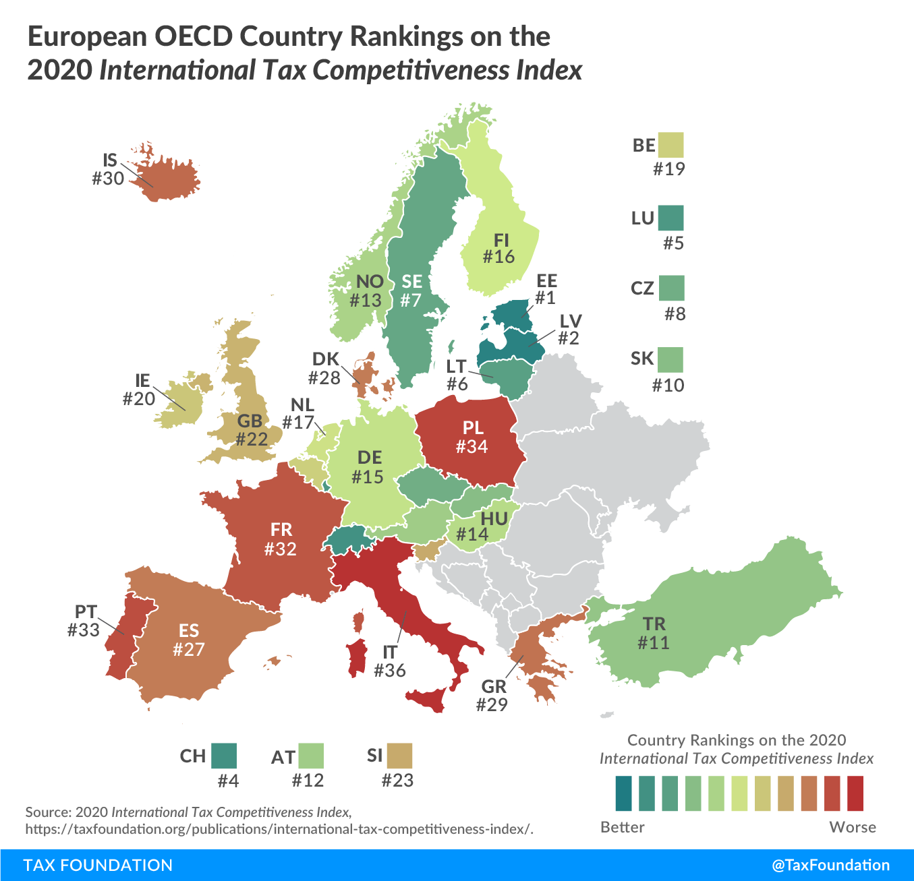

System podatkowy
Przyjazny kodeks prawny
Obszerne i nieefektywne prawo to największa blokada, która paraliżuje nasz rozwój gospodarczy. Nasze prawo jest bardzo skomplikowane, a zawiłe
przepisy komplikują się sprawiając, że prawo jest
bardzo niejasne i obszerne. Wg. badań (źródło: Doing Business) płacenie podatków w Polsce zajmuje ponad 300h rocznie. W Estoni dla porównania, wynik ten to około 50h. Pracujący ludzie spędzają wiele czasu
na formalnościach, a utrzymanie urzędów
powoduje dodatkowe koszty. Prawo nie powinno
budzić obaw obywateli. Całkowite uproszczenie prawa podatkowego, usunięcie większości regulacji oraz likwidacja niepotrzebnych instytucji jest pierwszym i podstawowym krokiem
do odblokowania naszego pełnego potencjału.
Ranking systemów podatkowych w Europie wg. TaxFoundation.org
Opodatkowanie firm
Pierwszą i podstawową formą opodatkowania jest opodatkownanie przedsiębiorstw. Aby jednak uprościć maksymalnie procedurę rozliczania firm i utrudnić uciekanie od podatków potrzebna jest tu gruntowna reforma.
Postulujemy zmianę sposobu opodatkowania osób prawnych, gdzie zamiast dochody, opodatkowane będą przychody. Jest to bardzo ważna zmiana, bo wiele ogromnych firm wykazuje brak dochodu i unika płacenia CIT na wszelakie sposoby.
Kolejną zaletą podatku przychodowego jest fakt, że jest znacznie prostszy do rozliczania i powszechniejszy - mają go płacić wszystkie spółki kapitałowe. W odróżnieniu od CIT, którym obciążone są tylko te, które wykazują dochód.
Tworzenie osobnych progów na pewno byłoby sprawiedliwsze, jednak tworzy kolejne komplikacje prawne, dlatego ostatecznie powinny powstać dwie stawki:
- 1% dla małych, średnich i mikro przedsiębiorstw (obniżane stopniowo do 0,5%)
- 2% dla dużych przedsiębiorstw i korporacji (obniżane stopniowo do 1,5%)
Opodatkowanie pracy
Podstawową formą opodatkowania obywateli jest ZUS, NFZ oraz PIT. Najlepszym sposobem na uproszczenie prawa jest połączenie tych wszystkich podatków w jeden. Podatek od osób fizycznych zatem
naturalnie wzrośnie, ale zastąpi również ZUS i NFZ, co wydaje się najlepszą możliwą opcją. Postulujemy zatem utworzenie jednolitego ściąganego z pensji podatku zależnego od dochodów o wysokości:
- 20% dla dochodów nieprzekraczających 3-krotności pensji średniej (obecnie do zł)
- 30% dla dochodów nieprzekraczających 18-krotności pensji średniej (obecnie do zł)
- 42% dla dochodów powyżej 18-krotności pensji średniej. (obecnie powyżej zł)
Opodatkowanie konsumpcji
Polska ma najgorsze w całej Europie prawo dotyczące podatków konsumpcyjnych, Jest to największa ze wszystkich wad naszego systemu podatkowego i jej natychmiastowa zmiana to powinien być priorytet rządu. Po pierwsze należy poczynić kroki ku obniżeniu podatków konsumpcyjnych oraz
poszerzeniu podstawy ich opodatkowania. Po pierwsze, należy wprowadzić jednolitą stawkę VAT na poziomie 16%, co znacznie ułatwi przestrzeganie prawa i jego interpretację. W polskim prawie występują liczne absurdy, a jednym z przykładów jest inna stawka opodatkowania ciastek i pieczywa, wody źródlanej i mineralnej albo musztardy i sosu musztardowego.
Kolejną sprawą wartą uwagi jest akcyza. Na nielegalnych narkotykach korzystają tylko przestępcy i kartele narkotykowe, podczas gdy państwo jedynie traci pieniądze. Wykazano empirycznie, że popyt na narkotyki jest nieelatyczny, co za tym idzie, nie jest wrażliwy na zmiany ceny, która jest determinowana dostępnością.
Innymi słowy, nie ważne jak będziemy przeciwdziałać, ilość uzależnionych będzie dokładnie taka sama. Wpływy z legalizacji narkotyków szacuje sie na ponad 15mld złotych, co istotnie zasili budżet państwa i odbierze pieniądze kartelom. Każda inne obciążenie konsumpcji jak podatek cukrowy czy opłata paliwowa zostanie zlikwidowane.
Podsumowując wszystkie zmiany:
- Jednolita stawka VAT 16%
- Zwiększenie wpływów z akcyzy za sprawą legalizacji narkotyków
- Zlikwidowanie opłaty paliwowej, podatku cukrowego i innych niezwiązanych z w.w. obciążeniami konsumpcji
Majątek i zanieczyszczenia
O ile wpływ podatków majątkowych na gospodarrkę nie jest tak ogromny jak np. CIT to posiadają inne wady. Obciążenie majątku zniechęca do inwestycji i oszczędzania, zachęca do ukrywania majątku oraz jego bezsensownego wydawania, nie przynosi dużych przychodów oraz niesie ze sobą spore koszta administracyjne. Jednakże bez wątpienia są bardziej sprawiedliwe niż opodatkowanie pracy, a dobra nieekonomiczne powinny być w jakiś sposób kontrolowane przez państwo.
Podzielimy je zatem na dwie kategorie:
- Podatek gruntowy o wysokości 0,75% wartości gruntu
- Podatek od zanieczyszczeń środowiska
Dochody międzynarodowe
W światowym systemie podatkowym dywidendy otrzymane przez spółkę macierzystą są ponownie opodatkowane według kraju spółki macierzystej, minus ulga podatkowa dla podatków już zapłaconych od tego dochodu. Uważamy, że powinny być one całkowicie zwolnione z opodatkowania.
Uprościć należy prawo dotyczące włączenia do podstawy opodatkowania tzw. CFC (z ang. kontrolowane spółki zagraniczne). Opodatkowaniu nie powinnien podlegać kapitał zarobiony przez jakiekolwiek spółki zależne za granicą. Zlikwidowany powinien być również tzw. podatek u źródła.
Wszystko to w celu umożliwienia swobodnego przepływu kapitału, który będzie mógł budować naszą gospodarkę.
Zakończenie
Wszelkie niewymienione wyżej podatki np. podatek od usług cywilnoprawnych naturalnie zostaną zlikwidowane. Podsumowując, cały budżet finansowany będzie z 6 podatków (dla porównania obecnie jest to ponad 20), a mają to być:
- Podatek od przychodów przedsiębiorstw (1-2%)
- Podatek od indywidualnych dochodów (20-40%)
- Podatek od wartości dodanej - VAT (16%)
- Podatek akcyzowy (stawki zróżnicowane)
- Podatek od gruntów (0,75%)
- Podatek od zanieczyszczeń (stawki zróżnicowane)